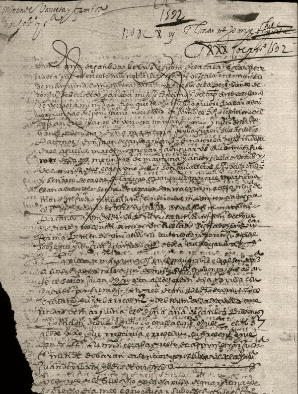

País Vasco · siglo XVI
Barroeta
Solar
Casa torre de Barroeta, en la merindad de Marquina (Vizcaya), incendiada por los Ugarte en 1470.
Apellido
Apellido vasco, con variantes Barrueta y Berrueta; de la voz «barrueta», «depresión del terreno», según Mogrobejo.
Bandos
Ligados al bando gamboíno, los Barroeta disputaron con los Ugarte el patronato de Santa María de Xemein.
Paso a Indias
Juan de Barroeta y Gamboa era hijo de Ana de Gamboa y Bérriz y de Andrés Ibáñez de Barroeta, jefe de la casa, que había pasado a Chile con su cuñado, el gobernador Martín Ruiz de Gamboa, y fue corregidor de Santiago. En 1592 Juan obtiene licencia para pasar a Chile y hacerse cargo de la hacienda que su padre había dejado allí; en Chile se lo conocerá como Juan Pérez de Berroeta.
